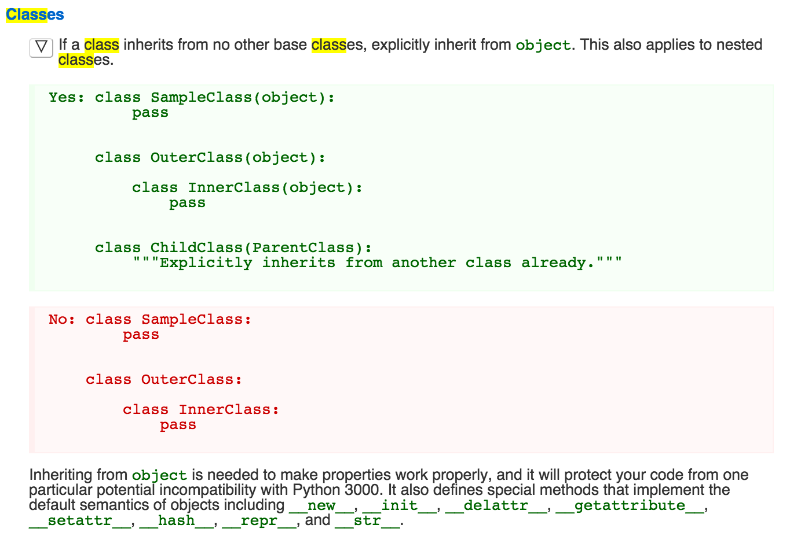

The Power of Abstraction
Mar 22, 2015
OOP & Abstraction
Object Oriented Programming (OOP), is a programming paradigm based on the idea of Abstraction.
Abstraction is the idea that you don't need to know everything behind the curtain, while being able to make use of the code written by others.
Because the complexity of the system can be managed by abstraction, we as programmers can be freed from lower-level repetitive works. For example, the CSS classes we learned to write is an example of abstraction.
Modules serve as a good example of abstraction in ways Python works. You don't need to know how the time module is constructed in Python, you can already use that module, such as calling time.current() to display the current time.
Abstraction is a relative concept. In Python's vocabulary, a module is an abstraction of the statements and definitions you want to reuse. The modules can also be "abstracted" into a package, which organizes a collection of modules interreferencing each other.
How Abstraction Works
In this course, we have used webbrowser module, os module, time module and turtle module, all from the Python core modules. To demonstrate the power of abstration, we did an exercise to create a program that checks the profanity words from a text file.
Before Kunal showed us how to write it in Python, we were asked to plan the profanity checker in plain English. Here's what I came up with:
- Come up with a list of all the profanity words I want to keep an eye on
- The program should go through a text message, word by word
- If any word matches the profanity words I defined in step 1, throw an alert.
- If not, move on until finish the scanning.
In Kunal's demo, this entire procedure seems to be handled by an online service already existed. I didn't need to write any function to produce the above steps. All I need to do is to combine that service with a Python module urllib, like this:
import urllib
profanity_URL = "http://www.wdyl.com/profanity?q="
# This URL is the existing profanity service we're using
# I can append any string after "?q=" and put the URL in a browser
# The program will take my string as an input
# Then output the profanity words if any, or "False"
def read_text():
quotes = open("/profanity/movie_quotes.txt")
# open(path/to/file) looks like a build in method that creates a file object for Python
contents_of_file = quotes.read()
# The file object seems to have a method 'obj.read()' that scans and stores the content of the file
print contents_of_file
quotes.close()
# Hard to tell what exactly 'obj.close()' does.
# Maybe it closes itself? check the documentation.
check_profanity(contents_of_file)
def check_profanity(text_to_check):
connection = urllib.urlopen(profanity_URL + text_to_check)
# urllib module has defined a function called urlopen
# rllib.ulropen(url\path) seems to work the same way as open(path\to\file)
# except that it opens a URL instead of file on my desktop
output = connection.read()
print output
connection.close()
read_text()Voila!
Class & Object
The concept of class can be seen as a categorization of a group of things (objects) that share similar attributes. Kunal's analogy is, the class is like the blueprint of a building, whereas the object, an instance of the class, is the actual building that's been built according to the blueprint.
My analogy: cat can be a class. An instance of cat can be my domestic short hair called Lover. Another instance of cat is my friend’s black Persian cat called Puffy.
That part is easy. Kunal didn't go much deeper than the "blueprint" metaphor. Out of curiosity, I digged around. So it looks like when it comes to the parent-child relationship, Python's definition of class and object is not nearly as complicated as the Greek Gods Family Tree.
Image courtesy of Brian Will's 7 Videos of Python
This is a bit tougue in the cheek. Everything is an object in Python. And every object has a class. str="This is a string." is an object in the string class. def some_function: is an object in the fucntion class.
A class itself is written in Python as an object, to reduce the confusion, the Class object in Python is called "Type". What Brian said in his slide takes a while to settle in my mind:
- The object class is an instance of the type class and itself
- The type class is an instance of the object class and itself
It doesn't make any sense if I haven't read a lot of code... I first bummped into theses concepts back in 2009 when I tried to learn Processing. After having read a lot of code in different languages, what Brian said above, finally clicked.
Once I understood the family tree of Python classes, this Style Guide made much more sense:
